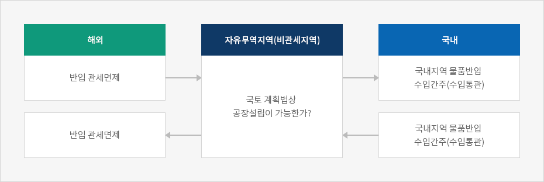
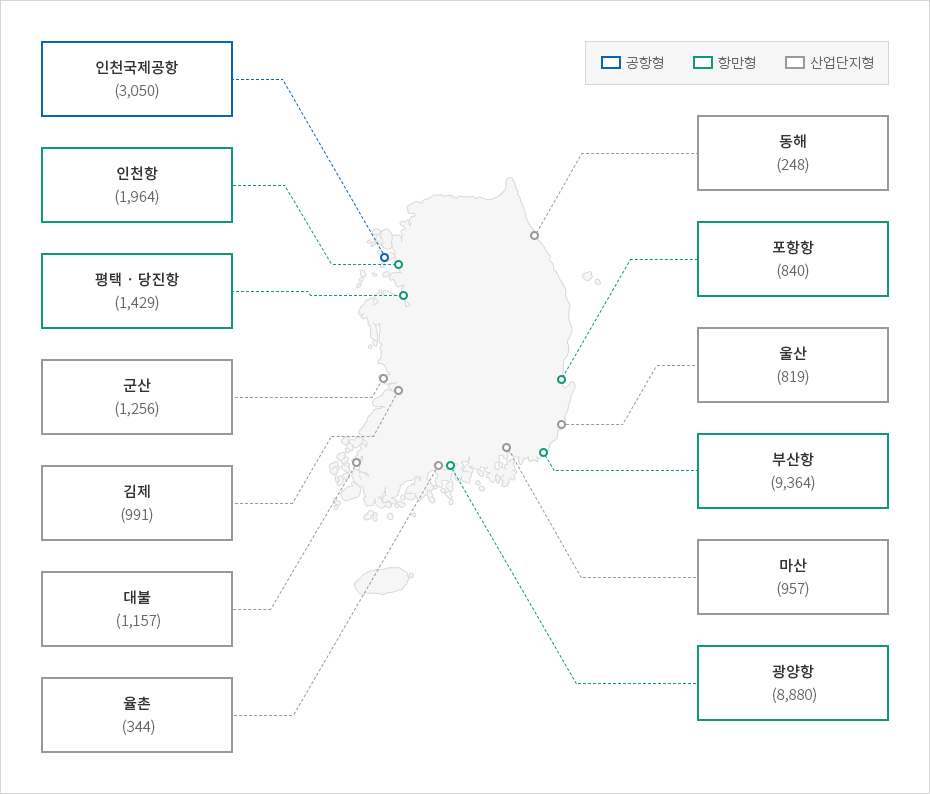

자유무역지역
- Home
- 인센티브
- 입지지원
- 자유무역지역
자유무역지역은 산업단지, 공항, 항만, 유통단지 및 화물터미널 등에 제조 및 물류업 영위 기업을 유치하고 상호 연계를 통한 시너지 효과를 창출하기 위하여 지정한 지역입니다. 투자업종 및 규모에 따라 국세 및 지방세 등의 감면 혜택이 주어지며, 자유무역지역 내로 반입하는 외국물품 및 특정 내국물품에 대하여 관세가 유보되고, 부가가치세 영세율 등이 적용됩니다.
이에 따라 수입원자재를 이용하여 생산된 제품을 해외로 수출할 경우 복잡한 환급 절차 등을 거칠 필요가 없는 이점이 있습니다. 또한 저렴한 가격으로 장기간 토지나 건물을 임대할 수 있으며, 수출목적의 제조업, 창고·물류·하역·포장 등의 물류업, 수출입거래를 위한 도매업 등을 영위하는 외국인투자기업에 유리한 입지를 제공합니다. 특히 제조업과 물류업을 병행하는 대규모 외국인투자기업에 최적의 입지라고 할 수 있습니다.
※ 투자유치 지원제도 개편방안(’18.7.)에 따라 자유무역지역은 경제자유구역으로 통합 예정
입주자격
- 수출을 주목적으로 하는 제조업을 영위하는 기업 (국내복귀기업 포함)
- 수출입 거래를 주목적으로 하는 도매업을 영위하는 기업
- 지식서비스산업을 영위하는 기업
- 제조업종, 지식서비스산업을 영위하는 외국인투자기업
- 물품의 하역·운송·보관·전시 등 물류업을 영위하는 기업
- 금융·통관·정보처리 등 입주기업체의 사업을 지원하는 업종
인센티브
| 구분 | 지원대상 | 지원내용 |
|---|---|---|
| 조세감면 |
|
지방세(취득세, 등록세) 최장 15년간 100% 감면 |
| 관세특례 |
|
|
| 부가세 영세율 적용 |
|
|
| 임대료 감면 |
|
|
※ 출처: 경제자유구역기획단 홈페이지 (www.fez.go.kr)
지정현황
자유무역지역은 산업단지형과 공항ㆍ항만형으로 구분할 수 있으며, 산업단지형으로는 마산, 익산, 군산, 대불 등 7개 지역, 공항ㆍ항만형으로는 인천공항과 부산항, 포항항, 평택ㆍ당진항, 광양항 등 6개 지역이 지정되어 있습니다. 그 밖에 자유무역지역으로 물류단지 및 물류터미널도 지정 가능합니다.
산업단지형 자유무역지역 현황(2018.3.31. 기준)
| 구분 | 마산 | 군산 | 대불 | 동해 | 율촌 | 울산 | 김제 |
|---|---|---|---|---|---|---|---|
| 지정일 | ’07.1.1. | ’00.10.6. | ’02.11.21. | ’05.12.12. | ’02.12.12. | ’08.12.8. | ’09.1.6. |
| 면적 (천㎡) | 957 | 1,256 | 1,157 | 248 | 344 | 819 | 991 |
| 입주업체(개) | 113 | 28 | 34 | 17 | 14 | 35 | 25 |
| 입주율(%) | 98.1 | 89.9 | 96.5 | 58.7 | 62.7 | 96.2 | 46.3 |
공항ㆍ항만형 자유무역지역 현황(2018.3.31. 기준)
| 구분 | 항만형 | 공항형 | ||||
|---|---|---|---|---|---|---|
| 부산항 | 포항항 | 평택·당진항 | 광양항 | 인천항 | 인천국제공항 | |
| 지정일 | ‘02.1.1. | ’08.12.8. | ’09.3.30. | ‘02.1.1. | ‘03.1.1. | ‘05.4.6.(1단계) ‘07.12.31.(2단계) |
| 면적(천㎡) | 9,364 | 840 | 1,429 | 8,880 | 1,837 | 3,050 |
| 입주업체(개) | 67 | 3 | 15 | 47 | 1 | 664 |
※ 출처: 산업통상자원부 홈페이지 (www.motie.go.kr)
자유로운 제조, 물류, 유통 및 무역활동 등이 보장되는 특별지역으로서, 외국인투자에 대해서는 관련법령에 따라 조세 및 임대료 감면, 지원시설 등 각종혜택을 부여하고 있다. 특히 관세유보지역이라는 점에서 어느 지역보다도 수출입 활동에 유리하다.
자유무역지역 개념도


-
해외
- 반입 관세면제
- 반입 관세면제
-
자유무역지역(비관세지역)
- 국토 계획법상 공장설립이 가능한가?
-
국내
- 국내지역 물품반입 수입간주(수입통관)
- 국내지역 물품반입 수입간주(수입통관)

※출처 : 산업연구원, 「외국인투자 유치 경제특구의 내실화 방안 연구」, 2013
자유무역지역 지정 현황

-
공항형
- 인천국제공항(3,050)
-
항만형
- 인천항(1,964)
- 평택 · 당진항(1,429)
- 포항항(840)
- 부산항(9,364)
- 광양항 (8,880)
-
산업단지형
- 군산(1,256)
- 김제(991)
- 대불 (1,157)
- 율촌 (344)
- 동해(248)
- 울산(819)
- 마산(957)

※출처 : 산업연구원, 「외국인투자 유치 경제특구의 내실화 방안 연구」, 2013